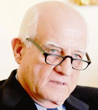
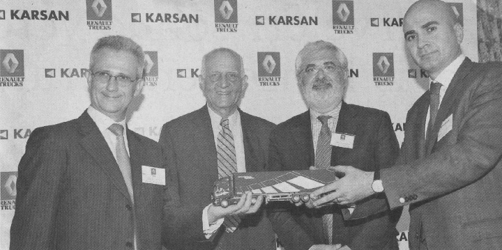
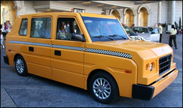

Koç Grubu'nda uzun yýllar yöneticilik yaptýktan sonra emekli olup Karsan'ýn çoðunluk hisselerini satýn alan Ýnan Kýraç, Türkiye'deki otomotiv sektörünü ve bu sektöre dair günahlarýný deðerlendirdi. Karsan-Renault Trucks anlaþmasýna yönelik toplantýda konuþan Kýraç, "Benim Koç Grubu'ndan emekli olduktan sonra Karsan iþine girme nedenim otomotivdeki günahlarýmý ve bilgi birikimimi bir yerde toplamaktý" dedi.
Otomotiv sektörünün duayen isimlerinden biri olan merhum Vehbi Koç'un damadý Kýraç, "Bu günahýmdan biri, o dönem patronum olan Vehbi Koç'u araþtýrma-geliþtirme ve mühendislik iþlerine önem vermeye ikna edemedim. Taklit etmeyi tercih ettik. Diðeri ise ayný iþi iki-üç yan sanayiciye verip zaman içinde hepsinin kaybolmasýna yol açtýk. Oysa iþi birine verseydik, büyüme ihtimali daha yüksekti."
Karsan Yönetim Kurulu Baþkaný Ýnan Kýraç þöyle devam etti:
"Eðer patronlarýmý ikna etseydim Ar-Ge'ye daha fazla pay ayýrtabilirdim. 1970'li yýllarda Türkiye ile Kore ayný sevyideydi. Ama bugün Kore Türkiye'yi geçmiþ durumda. Çünkü Ar-Ge çalýþmalarýna daha fazla aðýrlýk verdiler. Aslýnda benim jenerasyonum mühendislik kýsmýna fazla önem vermedi. Kopyalamayý tercih etti."
Karsan'ýn bünyesindeki teknoloji þirketi sayesinde Peugeot'dan Renault Trucks'a, Hyundai'nýn Amerikan taksilerine kadar pek çok iþi tek çatý altýnda yapabilen bir kalite ve esnekliðe ulaþtýðýný ifade eden Kýraç, "Özellikle az sayýda üretilen modeller için bu tür tesisler önemli. Amerikan taksilerinden sonra Londra taksileri için de teklif geldi; ancak yýlda sadece 2 bin 500 adetlik üretim istediler, bu bizim de yapacaðýmýzýn altý, kabul edemedik." diye konuþtu...
Hexagon'la farklý markalara proje ve teknoloji geliþtiriyoruz
40 yýlý aþkýn süredir otomotivin içinde yer alan, Otoyol ve Tofaþ Genel Müdürlüðü, Koç Holding Otomotiv Þirketleri Baþkanlýðý gibi üst düzey görevlerde bulunan Ýnan Kýraç, Karsan'ýn bu noktaya gelmesinde Tofaþ ve Renault'nun büyük katkýsý olduðunu söyledi.
1970'lerde yatýrým yapan iki otomotiv üreticisini örnek gösteren Kýraç, þöyle devam etti: "1996'da Gümrük Birliði'ne girildiði zaman otomotiv sektörünün yok olacaðý söyleniyordu. Fakat tam tersi oldu. Þirketler daha da büyüdüler. Þirketlerin Ar-Ge'ye önem vermeleri gerekiyor. Jan Nahum Doblo ile bu baþarýyý gösterdi. Biz de Ar-Ge þirketi Hexagon'u kurarak, birçok farklý marka için teknoloji geliþtirmeye baþladýk."
Ümidiniz kýrýlmasýn
Kýraç, bir merkeze baðlý olmadan niþ modellerin tek bünyede geliþtirilmesi için çaba harcadýklarýný söyledi. Türkiye'nin çok genç ve dinamik bir ülke olduðuna dikkat çeken Kýraç, "Ümidiniz kýrýlmasýn. Türkiye uzun zamanda yapýyor, ama en iyiyi yapýyor. Bu memlekete herkesin sahip çýkmasý lazým" diye konuþtu.

Soldan saða: Gino Costa, Ýnan Kýraç, Stefano Chmielewski, Mehmet Can Karabað.
Renault-Karsan iþbirliði
Kýraç konuþmasýnda Türk otomotiv sektörünün bugünlere gelmesinde Renault ve Tofaþ'ýn büyük rol oynadýðýný da belirtti. Bu arada daha önce duyurusu yapýlan ve pazartesi günü anlaþmasý imzalanan iþbirliði kapsamýnda, Karsan'ýn Bursa'daki fabrikasýnda Renault Premium Uzunyol, Premium Lander ve Kerax modellerinin üretimi gerçekleþtirilecek. Anlaþmaya göre Karsan, öncelikle Renault Trucks için yýlda 5 bin adet aðýr kamyon üretecek. Zaman içinde Renault Trucks'ýn ihtiyacýna baðlý olarak bu üretim hacminin iki vardiyada yýlda 10 bin adede kadar çýkabileceði belirtilirken, baþlangýçta Renault Trucks'ýn 7,5 ile 42 ton arasýnda aðýrlýða sahip ürünlerinden Premium Uzunyol, Lander ve Kerax modellerinin tüm versiyonlarýnýn üretimi gerçekleþtirilecek. Yerlilik oranýnýn yüzde 40 civarýnda olacaðý, iþbirliðinin Karsan'a yýlda 200 milyon avro ek ciro getireceði, 300 kiþiye istihdam imkâný yaratýlacaðý belirtildi. Yýllýk 5 bin adet üretimin 3 bin adedinin ihraç edileceði ifade edildi.
Satýþlar artacak
Anlaþmayla ilgili yapýlan toplantýda konuþan Renault Trucks Türkiye Genel Müdürü Gino Costa, Karsan'la yapýlan bu stratejik ortaklýðýn Türkiye'yi hem iç hem de dýþ pazarlar için üretim üssü haline getireceðini söyledi.
Costa, Türkiye'nin son yýllarda ekonomideki istikrarlý büyümesinin pazara da direkt yansýdýðýný ve Türkiye 6 ton üzeri kamyon pazarý 2006 yýlýnda 42 binin üzerinde satýþla Almanya, Ýngiltere ve Fransa'dan sonra Avrupa'nýn dördüncü büyük pazarý haline geldiðine dikkat çekti. Yapýlan anlaþmanýn Türkiye'de bugüne kadar attýklarý en büyük adým olduðunu söyleyen Costa, "Yerli üretim sayesinde Türkiye'deki araç satýþýmýzý kýsa vadede iki katýna çýkarmayý planlýyoruz" diye konuþtu. Bu arada Renault Trucks'ýn 6 ton üzeri kamyon pazarýnda payý yüzde 5 dolayýnda bulunuyor.
Karsan kamyon üretim üssü olacak
Karsan Genel Müdürü Mehmet Can Karabað Karsan'ýn 'tek tesiste çok marka' stratejisine uygun olarak çalýþtýðýna iþaret ederek, söz konusu anlaþma ile ilgili olarak, "Üretimin baþlamasýndan üç yýl sonra, yani 2011 yýlýnýn sonunda Renault Trucks ile daha da büyük ve entegre bir iþbirliði için joint venture, yani ortak giriþim kurma seçeneðini deðerlendirecek ya da karþýlýklý olarak iþbirliðimizin mevcut haliyle devamýna karar vereceðiz. Kontrat süresi boyunca taraflar Türkiye'de aðýr kamyon üretimi için birbirlerine münhasýran baðlý olacaklar" dedi ve ekledi: "Karsan zaman içinde Renault Trucks'ýn en büyük üretim üslerinden biri olacak."
Renault Trucks Baþkaný Stefano Chmielewski de Karsan'la yaptýklarý bu ortaklýðýn baþlangýç olduðunu belirterek, "Baþka sürprizler de gelecektir. Çünkü Türkiye'yi sanayi ve pazar üssü olarak görüyoruz. Bu nedenle Türkiye'yi Avrupa ticari direksiyonumuza dahil ettik" diye konuþtu.
Ekonomi 20 yýlda patlayacak:
Stefano Chmielewski, "Türkiye'yi Avrupa ticari direksiyonuna geçirdik. Çünkü, Türkiye, Avrupa'da her konuda olduðu gibi bunu hakediyor" diyerek, þu deðerlendirmeyi yaptý: "Fransa'nýn dýþýnda 100 ülkeyle çalýþýyoruz. Türkiye'yi bir sanayi ve pazar üssü olarak görüyoruz çünkü sürekli geliþiyor. Türkiye'nin teknik, yan sanayi ve insan potansiyeli çok güçlü. Ayrýca Türkiye 20 yýl içinde çok büyük bir ekonomi patlamasý yaþayacak. Bunun dýþýnda Rusya'ya da yöneleceðiz. Türkiye'ye kýyasla, çok istikrarlý olmasa da sanayi kapasitemizi oraya da yönlendirmek istiyoruz. Türkiye'deki üretimimiz yaklaþýk yüzde 40 oranýnda yerli olacak çünkü bu aþamalý bir çalýþma. Fas, Uruguay, Arjantin ve Tayvan'da da montaj fabrikalarýmýz var. Türkiye'de çok daha fazla þansýmýz olduðu için oralara yerleþmeyi düþünmüyoruz. Ayrýca Türkiye, sahip olduðu korkunç potansiyelden dolayý bize daha çok seçenek sunuyor."
Ýlgili Haber:
Karsan Otomotiv, ABD ve Kanada'da satýlmak üzere yeni bir taksi modelinin 10 yýl süreyle üretimi için mutabakat metni imzaladý:
Türkiye'nin duayen otomotivcisi Ýnan Kýraç, sonunda bir hayalini daha gerçekleþtirdi ve yýllar önce teknolojisine muhtaç olduðumuz ABD'ye, kendi mühendislerinin geliþtirdiði taksilerle 'Hem imalatýnýz hem de mühendislik kaliteniz çok iyi' dedirtecek..
Sonunda oldu! Ýnan Kýraç'ýn en büyük hayallerinden biri gerçek oldu. Türk otomotiv sanayiinin duayen ismi Ýnan Kýraç'ý telefonla arayýp, 'Sonunda tereciye tere satar hale gelmiþsiniz, öyle mi?' diye sordum. Kýraç pek keyifliydi. 'Doðru, tereciye tere satar hale geldik. ABD'nin taksilerini Karsan fabrikasýnda üreteceðiz' dedi. Aslýnda Ýnan Kýraç, eþi Suna Kýraç'ýn özel durumu nedeniyle uzun zamandýr kendini güncel iþlerden sýyýrmýþtý. Telefonda da 'Ben arkadaþlarýma aðabeylik yapýyorum ve bugün onlarla iftihar ediyorum' dedi. ABD'de taksilerin otomobilden bozma olduðunu ve þoför kabininin koruma kýsmý nedeniyle hem dar olduðunu hem de engelli insanlarýn binmesinin mümkün olmadýðýný anlatan Kýraç, kendilerine sunulan proje üzerinden hazýrladýklarý teklifin kabul gördüðünü söyledi.
Mühendisliði almak ayrý gurur
ABD aðýr vasýtanýn bir adaptasyonla taksi haline getirilmesini isteyince, Karsan'ýn mühendisleri de bu prototip üzerinde çalýþmýþ ve yeni bir model geliþtirmiþler. Yani Ýnan Kýraç, projenin mühendisliðini de Karsan'ýn almýþ olmasýnýn ayrý bir gururunu yaþýyor. 'Beni çok mutlu etti bu sonuç' diyen Ýnan Kýraç, pek çok þirketin arasýndan Karsan'ýn sýyrýlmasýndan dolayý gururlu. Kýraç bu durumun Türkiye'nin hem mühendislik hem de imalat kalitesini artýk ispatladýðý görüþünde. Ýnan Kýraç'ý yakýndan tanýyanlar onun yýllardýr savunduðu fikirlerin birer birer fiili olarak gerçekleþtiðini de bilecekler. Kýraç, otomotiv sektöründe ne zaman konuþacak olsa hep Türkiye'nin bu tarz projelerin peþinden gitmesini öðütlemiþti.
Dün de sohbet ederken þunlarý söyledi: "Ben hep söyledim. Bir markaya baðýmlý olmadan, deðiþik markalara niþ üretim yapmak en doðrusu. Karsan þimdi buna öncülük etti. Bakýn Karsan'ýn fabrikasýna. Hem Hyundai marka araçlar hem de Renault marka araçlar üretiliyor. Þimdi de taksi yapacak. O bakýmdan çok mutluyum." Kýraç'a 'Görünen o ki sizin de emekliliðe pek vaktiniz yok' diyecek oldum. "Ben artýk kültür merkezi projesi ile yakýndan ilgileniyorum. Doðru, emeklilik yok, ama Suna'nýn hayalini gerçekleþtirmeye uðraþýyorum" dedi.
Þelale Kadak, Sabah Gazetesi, 22-05-2007
|
Kaynaklar:
- "Patronlarýmý Ar-Ge için zorlasaydým bugün Kore seviyesinde ülke olurduk", Radikal, 11-07-2007
www.radikal.com.tr/haber.php?haberno=226608&tarih=11/07/2007
- Deðerli YTL 200 bin kiþiyi iþsiz býraktý, Rotahaber, 11-07-2007
www.rotahaber.com/haber/20070711/Degerli-YTL-200-bin-kisiyi-issiz-birakti.php
- YTL bir deðer kazanýrken bin kiþi iþinden oluyor, Zaman, 11-07-2007
www.zaman.com.tr/webapp-tr/haber.do?haberno=562693#
- Renault Trucks: "Üretime Yeni Baþlýyoruz, Sürprizlerimiz Yolda", Haberler.com, 11-07-2007
www.haberler.com/renault-trucks-uretime-yeni-basliyoruz-haberi
- "Mühendislerimle iftihar ediyorum çok mutluyum", Sabah, 22-05-2007
www.sabah.com.tr/2007/05/22/haber...
- Karsan, ABD için Bursa'da yýlda 20 bin taksi üretecek, Hürriyet, 21-05-2007
www.hurriyet.com.tr/ekonomi/...
- Karsan ABD ve Kanada için taksi üretecek, NTVMSNBC, 22-05-2007
www.ntvmsnbc.com/news/408570.asp
|